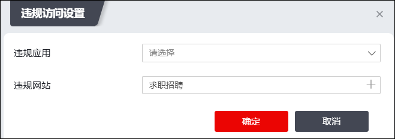
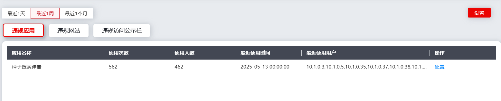
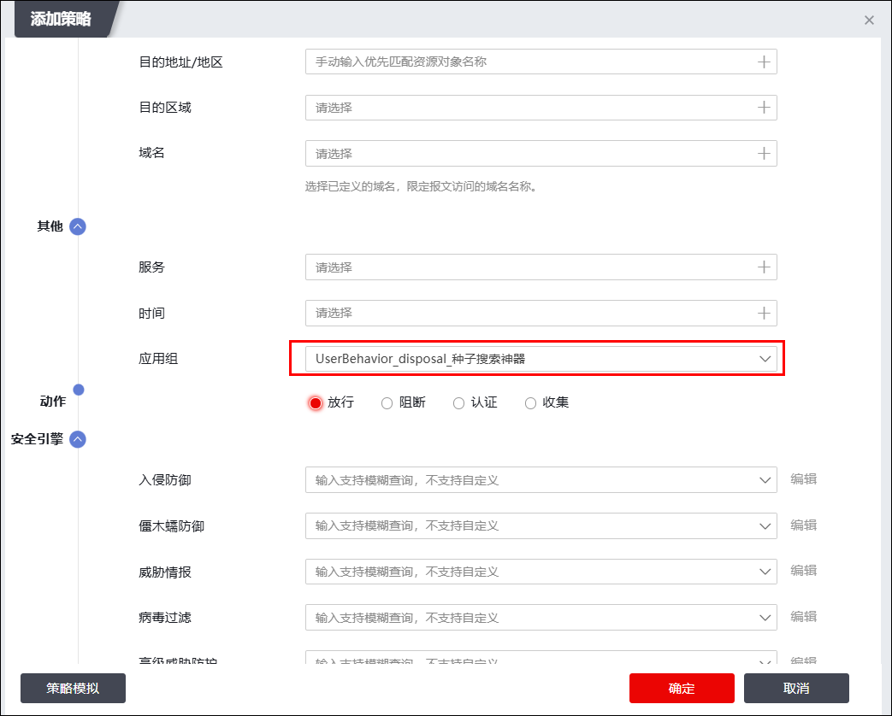
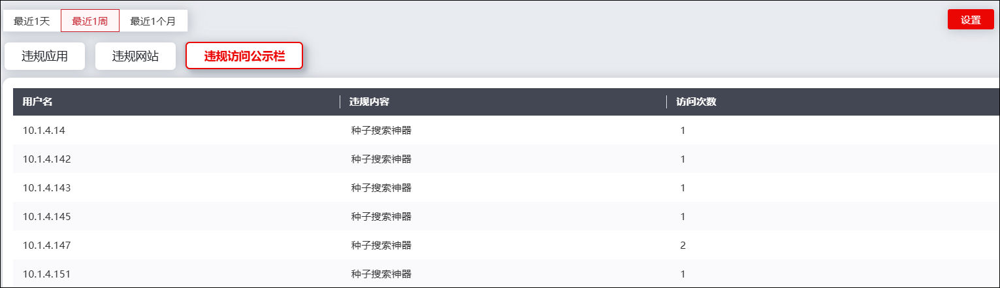

行为分析模块展示系统智能分析用户上网流量后的分析结果，从违规访问对象维度和违规访问用户维度进行展示。管理员可以通过查看行为分析结果准确了解违规访问的用户及其访问对象。
查看违规应用/违规网站的方式类似，接下来以介绍查看违规应用为例介绍查看行为分析结果的具体操作：
| 步骤1 | 选择 ，默认激活“违规应用”页签。 |
点击界面右上角的“设置”，弹出窗口界面如下图所示。

配置违规应用集（在下拉窗口中选择已配置的应用组，或新增新的应用组）和违规网站（在下拉窗口中选择域名分类库）后，点击【确定】保存配置。
|
²无论是违规应用、违规网站、还是违规访问公示栏，需点击右上角的【设置】配置违规规则，NGFW方可监测用户的违规数据。 |


界面默认展示最近一天内的违规应用，详细信息包括应用名称、使用次数、使用人数、最近使用时间和最近使用用户。点击“操作”栏的“处置”，可以根据该条违规应用的信息创建访问控制规则进行处置，如下图所示（下图为上图红框中违规应用生成的访问控制策略）。

| 步骤2 | 查看违规访问公示栏 |
激活“违规访问公示栏”页签，可以查看进行过违规访问的用户、其违规内容和访问次数，如下图所示。

|
²“行为分析”模块依赖于“域名分类库”，如果没有购买域名分类库，是无法对违规访问/应用/网站进行设置的，本模块不会展示任何数据。 |